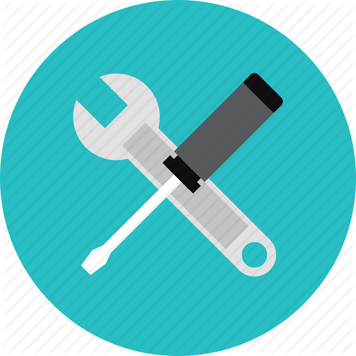

Olá, me chamo Danilo Rodrigues!
Nasci em 12 de junho 2001, tenho 22 anos e sou estudante de
Análise e Desenvolvimento de Sistemas na Fatec Sorocaba.
Trabalho com Desenvolvimento Web a quase 2 anos, iniciei trabalhando como estagiário e com 7 meses consegui
minha promoção para Desenvolvedor Web Júnior.
Atualmente estou atuando como Desenvolvedor Web Pleno e sou responsável por auxiliar, desenvolver, implantar e
manter aplicações web.

Desenvolvedor Web Pleno - Warren Brasil
Ago/2022 - Até o momento
A antiga empresa a qual trabalhava foi adquirida pela Warren Brasil e evoluí pra
Desenvolvedor Web Pleno, onde atualmente me especializei como desenvolvedor web com a
utilização do framework Vue.js e a linguagem TypeScript.
Também participo nas atuações dos projetos backend, para ajudar na entrega das tarefas emergênciais
e desafogar o time de desenvolvedores.
Desenvolvedor Web Júnior - MeuPortfolio
Abr/2021 - Jul/2022
Ao ser promovido para Desenvolvedor Web Júnior já participava de algumas entregas mais
complexas e ajudava o time na solução de problemas.
As linguagem utilizada foi TypeScript, juntamento com o framework Vue.js, utilizado para o desenvolvimento
web moderno.
Estagiário em Desenvolvimento Web - MeuPortfolio
Out/2020 - Mar/2021
Iniciei meu processo como desenvolvedor web, a empresa possuia/possui um produto cujo recebe constantes
atualizações e eu era um dos responsáveis pelo de desenvolvimento das funcionalidades mais simples.
As linguagem utilizada foi TypeScript, juntamento com o framework Vue.js, utilizado para o desenvolvimento
web moderno.

Estagiário em T.I - FUNSERV
Jul/2019 - Jun/2020
Atendia chamados de funcionários para realizar manutenções e solucionar problemas
referentes as tecnologias envolvidas nos processos do trabalho. Também realizava as
montagens e manutenções dos hardwares presentes no prédio.